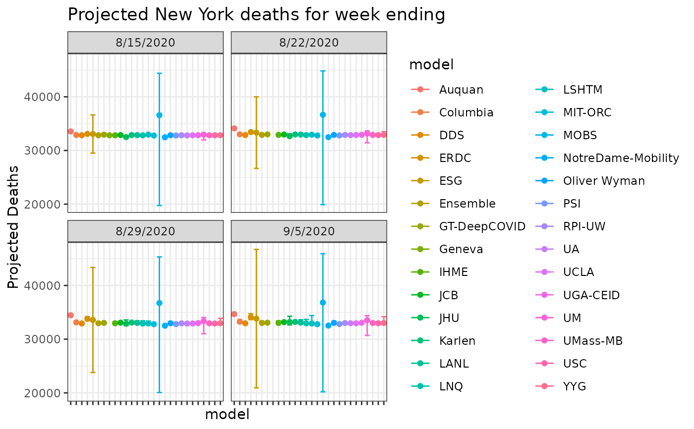

Projected deaths from COVID-19 models
Source:R/cdc_aggregated_projections.R
cdc_aggregated_projections.RdThe US CDC gathers projections from several groups around the world and aggregates them into a single data resource. See the reference below for details of the models.
cdc_aggregated_projections()Value
a data.frame
Details
These models are not updated daily but more like weekly. This function will attempt to grab the latest version.
See also
Other data-import:
acaps_government_measures_data(),
acaps_secondary_impact_data(),
apple_mobility_data(),
beoutbreakprepared_data(),
cci_us_vaccine_data(),
cdc_excess_deaths(),
cdc_social_vulnerability_index(),
coronadatascraper_data(),
coronanet_government_response_data(),
cov_glue_lineage_data(),
cov_glue_newick_data(),
cov_glue_snp_lineage(),
covidtracker_data(),
descartes_mobility_data(),
ecdc_data(),
econ_tracker_consumer_spending,
econ_tracker_employment,
econ_tracker_unemp_data,
economist_excess_deaths(),
financial_times_excess_deaths(),
google_mobility_data(),
government_policy_timeline(),
jhu_data(),
jhu_us_data(),
kff_icu_beds(),
nytimes_county_data(),
oecd_unemployment_data(),
owid_data(),
param_estimates_published(),
test_and_trace_data(),
us_county_geo_details(),
us_county_health_rankings(),
us_healthcare_capacity(),
us_hospital_details(),
us_state_distancing_policy(),
usa_facts_data(),
who_cases()
Examples
res = cdc_aggregated_projections()
head(res)
#> # A tibble: 6 × 10
#> model forecast_date target target_week_end… location_name point quantile_0.025
#> <chr> <chr> <chr> <chr> <chr> <dbl> <dbl>
#> 1 Auqu… 8/10/2020 1 wk … 8/15/2020 Alabama 1972 1938
#> 2 Auqu… 8/10/2020 1 wk … 8/15/2020 Alaska 33 32
#> 3 Auqu… 8/10/2020 1 wk … 8/15/2020 Arizona 4625 4552
#> 4 Auqu… 8/10/2020 1 wk … 8/15/2020 Arkansas 644 627
#> 5 Auqu… 8/10/2020 1 wk … 8/15/2020 California 11518 11328
#> 6 Auqu… 8/10/2020 1 wk … 8/15/2020 Colorado 1957 1938
#> # … with 3 more variables: quantile_0.25 <dbl>, quantile_0.75 <dbl>,
#> # quantile_0.975 <dbl>
dplyr::glimpse(res)
#> Rows: 11,196
#> Columns: 10
#> $ model <chr> "Auquan", "Auquan", "Auquan", "Auquan", "Auquan",…
#> $ forecast_date <chr> "8/10/2020", "8/10/2020", "8/10/2020", "8/10/2020…
#> $ target <chr> "1 wk ahead cum death", "1 wk ahead cum death", "…
#> $ target_week_end_date <chr> "8/15/2020", "8/15/2020", "8/15/2020", "8/15/2020…
#> $ location_name <chr> "Alabama", "Alaska", "Arizona", "Arkansas", "Cali…
#> $ point <dbl> 1972, 33, 4625, 644, 11518, 1957, 4532, 621, 615,…
#> $ quantile_0.025 <dbl> 1938, 32, 4552, 627, 11328, 1938, 4517, 616, 611,…
#> $ quantile_0.25 <dbl> 1960, 33, 4598, 638, 11458, 1950, 4527, 619, 614,…
#> $ quantile_0.75 <dbl> 1983, 34, 4649, 650, 11584, 1962, 4537, 622, 616,…
#> $ quantile_0.975 <dbl> 2003, 34, 4691, 659, 11708, 1971, 4547, 625, 619,…
# available models
table(res$model)
#>
#> Auquan CMU Columbia Columbia-UNC
#> 208 204 416 8
#> DDS ERDC ESG Ensemble
#> 416 416 432 456
#> GT-CHHS GT-DeepCOVID Geneva IHME
#> 8 360 112 416
#> JCB JHU Karlen LANL
#> 448 448 416 432
#> LNQ LSHTM MIT-ORC MOBS
#> 456 224 208 408
#> NotreDame-FRED NotreDame-Mobility Oliver Wyman PSI
#> 56 440 416 440
#> QJHong RPI-UW STH UA
#> 8 264 16 416
#> UCLA UCM UGA-CEID UM
#> 440 16 456 376
#> UMass-MB USC YYG
#> 456 456 448
# projection targets
table(res$target)
#>
#> 1 wk ahead cum death 1 wk ahead inc death 2 wk ahead cum death
#> 1468 1415 1412
#> 2 wk ahead inc death 3 wk ahead cum death 3 wk ahead inc death
#> 1359 1412 1359
#> 4 wk ahead cum death 4 wk ahead inc death
#> 1412 1359
min(res$forecast_date)
#> [1] "8/10/2020"
max(res$target_week_end_date)
#> [1] "9/5/2020"
library(dplyr)
library(ggplot2)
# FACET view
res_ny = res %>%
dplyr::filter(location_name=='New York' & grepl('cum death', target)) %>%
dplyr::filter(model!='UMass-MechBayes')
res_ny %>%
dplyr::filter(location_name=='New York') %>%
ggplot(aes(x=model, y=point, color=model)) +
geom_errorbar(aes(ymin= quantile_0.025, ymax = quantile_0.975)) +
facet_wrap(facets='target_week_end_date') +
geom_point() +
labs(y='Projected Deaths') +
theme_bw() +
theme(axis.text.x=element_blank()) +
ggtitle('Projected New York deaths for week ending')

#'
# combined view
pd <- position_dodge(width = 3) # use this to offset points and error bars
res_ny %>%
ggplot(aes(x=target_week_end_date, y=point, color=model)) +
geom_errorbar(aes(ymin= quantile_0.025, ymax = quantile_0.975), position=pd) +
geom_point(position=pd) +
labs(y='Projected Deaths') +
geom_line(position=pd) +
theme_bw() +
theme(legend.position='bottom') +
ggtitle('Projected New York deaths for week ending')
#> Warning: position_dodge requires non-overlapping x intervals
#> Warning: position_dodge requires non-overlapping x intervals
#> geom_path: Each group consists of only one observation. Do you need to adjust
#> the group aesthetic?